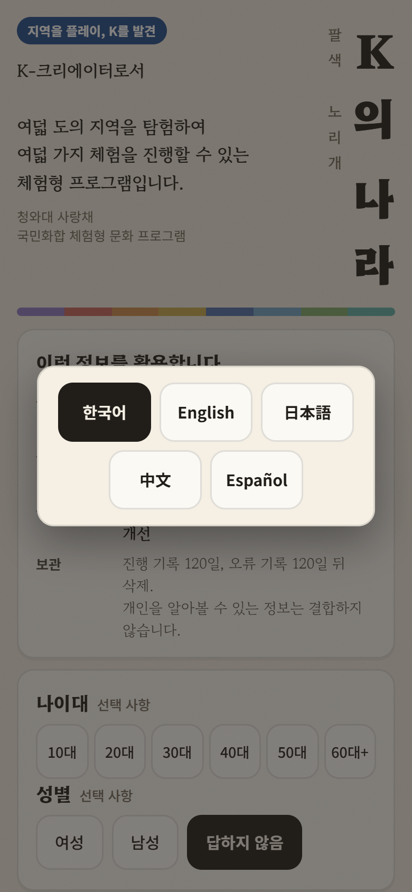
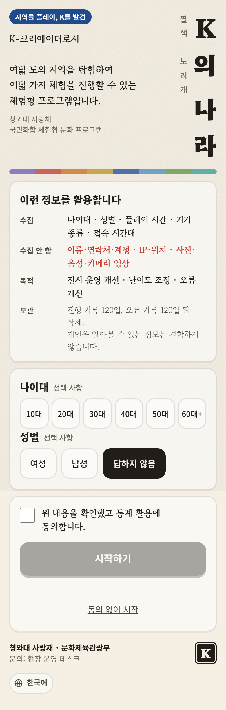
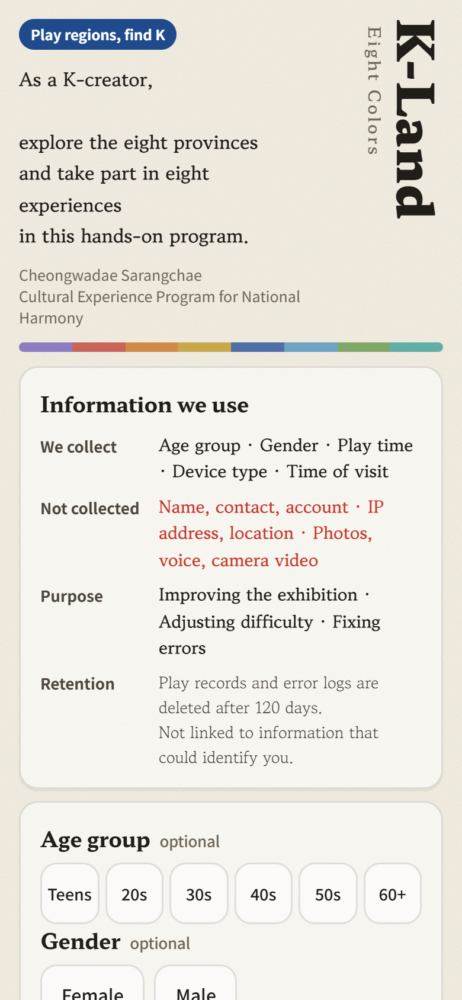
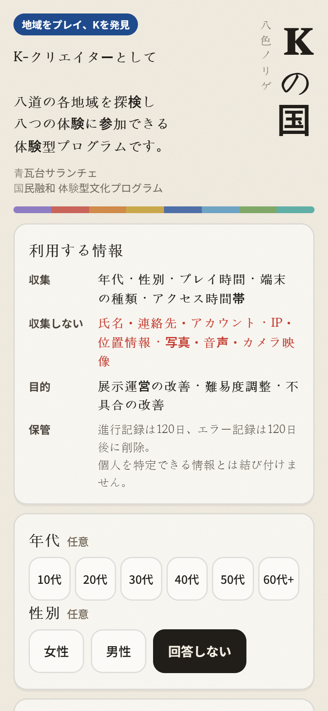
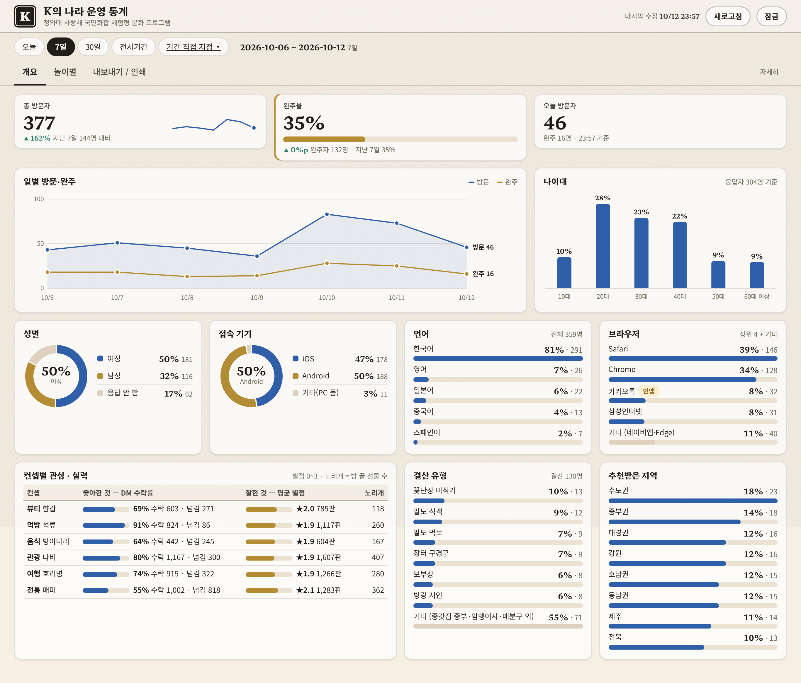
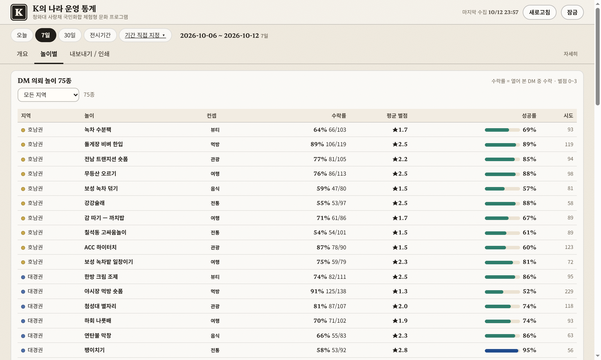

관람객이 전시장 QR을 찍으면 가장 먼저 보는 화면입니다.
언어를 고르고 안내를 읽은 뒤 시작하기를 누르면 게임이 바로 열립니다.
여기서 고른 언어가 게임까지 그대로 이어져서, 게임 안에서 언어를 다시 고를 필요가 없습니다.




한국어 · 영어 · 일본어 · 중국어 · 스페인어. 휴대폰 언어 설정과 상관없이 관람객이 직접 고르고, 고른 언어로 게임이 시작됩니다.
이름 · 연락처 · 위치 · 사진 · 음성은 수집하지 않습니다.
나이대와 성별은 선택 사항이고, 기록은 120일 뒤 삭제됩니다.
‘동의 없이 시작’을 누르면 통계 수집 없이 게임만 진행됩니다.
관람객이 불편 없이 고를 수 있게 했습니다.
안내를 읽는 동안 게임을 미리 내려받아 두어,
시작하기를 누른 뒤 기다리는 시간을 줄였습니다.
전시의 색동 · 노리개 디자인과 같은 톤입니다.
관람객이 입장 페이지와 게임에서 남긴 기록이 자동으로 모입니다.
몇 명이 왔고 몇 명이 끝까지 했는지, 어떤 놀이를 좋아하고 어디서 어려워하는지를
담당자가 바로 확인할 수 있습니다.


오늘 · 7일 · 30일 · 전시 기간 전체, 또는 날짜를
직접 지정할 수 있습니다.
인쇄용 보고서와 엑셀(CSV) 내려받기를 지원합니다.
담당자만 열 수 있고, 검색에도 노출되지 않습니다.